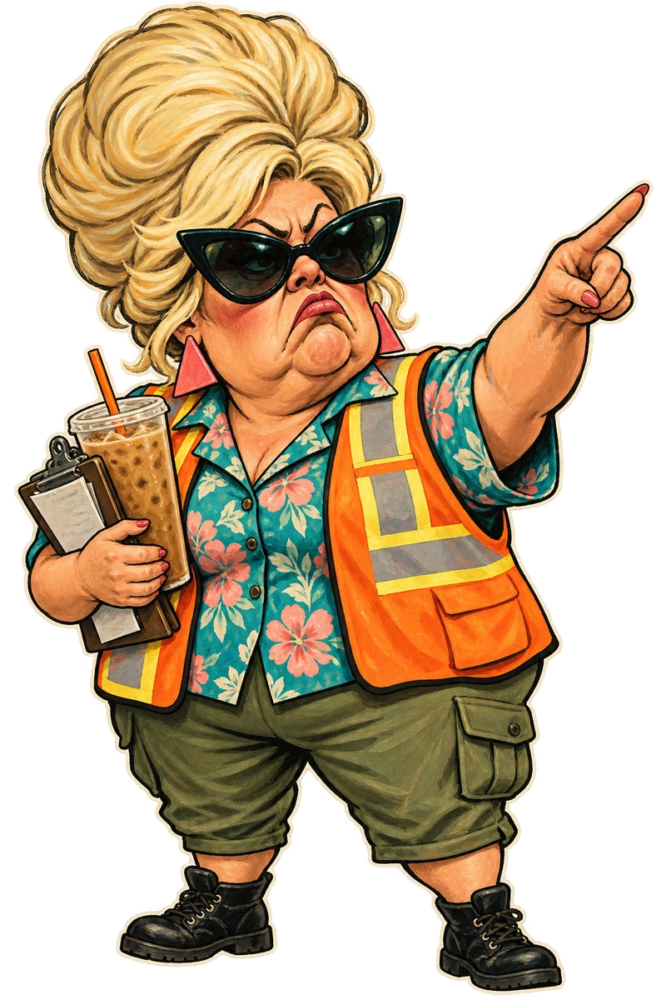

SUNSHINE DISCOUNTS · COUNTY JURISDICTION
EST. BEFORE THE INCIDENT
SETTING UP THE COUNTY’S PROBLEM…
ENDURANCE
12
/12
ACTIONS
3
CHAOS
0
/6
What happens at 6?
Barricade · 0 Block
Generator · off
PICK A CARD. MAKE IT EVERYONE’S PROBLEM.
TURN 1 / 5
Incident log ↗
WELCOME TO SUNSHINE COUNTY
FLORIDA
MAN.
Three locals.
One unpermitted portal.
Deal your crew’s cards. Contain a supernatural sinkhole.
Try to keep the paperwork out of the afterlife.
Start selected crew
→
Teach me to play
Resume incident
SOLO · FIVE TURNS · QUESTIONABLE DECISIONS

COUNTY
APPROVED*
*APPROVAL CURRENTLY UNDER REVIEW
Back to the incident